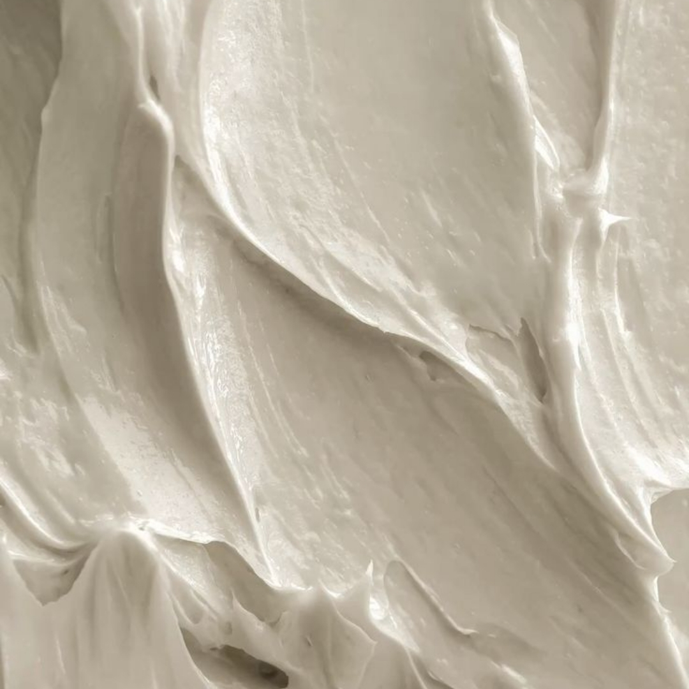

Every practice has a remake story. The patient is back in the chair, the temporary is off again, and the team is trying to figure out what went wrong. The instinct is to blame the lab. Sometimes that is fair. More often, the remake traces back to information that was missing, ambiguous, or never communicated before production began.
The hidden cost nobody puts on the invoice
A remake is rarely just a free crown. It is a second prep appointment or a second seat block, staff time to repackage and resubmit, a patient who now questions the outcome, and a schedule hole that could have held production. Labs absorb material and labor costs, but the practice absorbs the disruption. That asymmetry is why remakes feel so expensive even when the lab does not charge for them.
What actually drives most remakes
From a lab perspective, remakes cluster around a short list of causes. Shade or characterization that did not match patient expectations — often because stump shade, photography, or the target shade was incomplete. Fit issues tied to margin interpretation, where blood, saliva, or soft tissue obscured the finish line in the record. Occlusal problems from a bite registration that was distorted, double, or taken in a position that does not reflect the patient’s habitual closure. And prep clearance mismatches, where the chosen material needed more room than was available, forcing over-contouring or a high seat.
None of these are mysteries. They are predictable failure points when the record is incomplete.

What labs rarely say out loud
Technicians design to the data they receive. When a margin is truncated on a scan or impression, the lab must interpret where it actually sits — and two technicians may interpret differently. When a bite record shows the patient in maximum intercuspation but the clinician intends group function, the design follows the record, not the intent. When esthetic expectations are high but the only shade note is a single tab number with no photos, the result may be clinically acceptable and still feel wrong to the patient.
These are not excuses. They are the mechanics behind remakes that look like lab errors from the chair.
Remake versus adjustment: know the difference
Not every imperfect delivery needs a remake. Minor occlusal relief, slight contact polishing, or a small internal adjustment can often resolve fit issues in minutes. A remake is warranted when the shade is wrong, the margin relationship cannot be corrected without remaking, the contacts are structurally off, or the patient will not accept the esthetic outcome. Calling the lab before deciding — with photos, the issue described clearly, and the restoration available for evaluation — often saves a full remake cycle.
How to cut remake rates without changing labs
- Confirm margins are fully visible and captured before sign-off — zoom in on digital scans
- Send stump shade and photographs for any case where masking or characterization matters
- Use a stable, repeatable bite record and note occlusal intent on the prescription
- Flag limited clearance or unusual prep geometry before design begins
- Call the lab when something is uncertain rather than hoping it resolves at delivery
These habits do not eliminate remakes entirely. They remove the preventable ones — which is most of them.
When a remake is the right call
Sometimes the record was good and the outcome still missed. Materials fail, shades shift in firing, and human error exists on both sides. A straightforward remake request with clear documentation — what failed, what the patient needs, and any updated records — gets the case back on track faster than a vague “doesn’t fit” note. Treating remakes as a diagnostic conversation rather than a blame exercise is what separates teams that improve from teams that repeat the same cycle.
Note: This article shares general workflow guidance for dental professionals. Remake policies vary by laboratory; confirm terms with your lab partner. Clinical judgment and manufacturer instructions always take precedence.